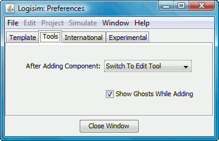

A guia Ferramentas (Tools)

Essa guia inclui opções que afetam a forma como as ferramentas predefinidas
se comportam.
- Após adicionar componentes: Por padrão, após a adição de cada componente
individal, o Logisim volta para a ferramenta Editar para permitir que você mova
componentes de lugar e para adicionar conexões. Essa opção lhe permitirá configurar esse
comportamento para que o Logisim permaneça na mesma ferramenta para adições do mesmo
componente, até optar por escolher a ferramenta Editar novamente. (Esse foi o
comportamento padrão antes da versão 2.3.0. Embora mais intuitivo, esse comportamento
requer mais movimentos do mouse para alternar entre ferramentas.)
- Mostrar contornos durante acréscimos: Quando marcado, ou quando uma
ferramenta para adicionar um novo componente for selecionada, um contorno cinza-claro
do componente a ser adicionado será desenhado a medida que o mouse se mover pela tela.
Por exemplo, se você selecionar a ferramenta porta AND e mover o mouse pela janela
(sem pressionar o botão do mouse), um contorno cinza de um porta AND será exibido
onde o cursor estiver e aparecerá quando o mouse for clicado.
Se desmarcar a opção, irá desativar esse comportamento.
Próximo: A guia International.